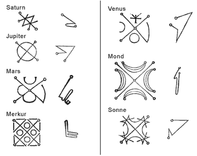

|
| Die
1533 von Agrippa von Nettesheim (eigentlich Heinrich
Cornelius) veröffentlichte geheime Philosophie (De occulta
Philosophia) ist ein besonders ausführliches Werk über
magische Wechselbeziehungen und Korrespondenzen. Das Buch enthält genaue Anweisungen zur
|
Talismanherstellung und Erklärungen zur
Magie von Ziffern und Wörtern sowie eine Liste mit Bildern von
Planeten, die
ganz im Zeichen der hermetischen Tradition stehen und dem Picatrix ähneln.
Agrippa argumentiert mit der
Dreiteilung der Welt in eine körperliche, eine seelische oder
astrale (anima) und eine geistige (spiritus) Welt. So wie die
Welt ist auch das Werk Agrippas in drei Teile gegliedert. Im Buch
I wird die materielle Welt beschrieben, die sich aus
den vier Elementen zusammensetzt. Das Buch II handelt von
der astralen Welt mit seinem Tierkreis und den wunderbaren Körpern. Im
Buch III geht Agrippa auf die geistige Welt der Engel, der
Intelligenzen und
der Ideen ein. |
 |
|
|
|
|
|
|
| Die einzelnen Welten stehen in
einer hierarchischen Beziehung zueinander. Aus der geistigen Welt ist
der Himmel entstanden, aus dem wiederum die materielle
Welt hervorgegangen ist. Die Verbindung zwischen dem Oberen und
dem Unteren erfolgt mithilfe der Astrologie,
woraus der Gedanke einer auf Seelenverwandtschaften basierenden astralen Magie
entstanden ist.
Das Werk Agrippas ist von herausragender
Bedeutung, da in ihm alle astralen Seelenverwandtschaften, die
Eigenschaften von Pflanzen sowie ihre Beziehungen zur Tier-,
Mineral- und Pflanzenwelt
enthalten sind.
So schenkt Agrippa der Wechselbeziehung zwischen Ziffern
und Elementen besondere Aufmerksamkeit:
die 4 entspricht dem Feuer, die 6 der Erde, die 8 der
Luft und die 12 dem Wasser.
Die heiligen Planetentafeln sind magische Quadrate, die zum Anrufen
bestimmter Sterne verwendet werden. Ein Beispiel: Die erste Tafel wird Saturn
zugeordnet und setzt sich wie folgt zusammen: " ein Quadrat
mit drei Spalten, in denen neun besondere Zahlen enthalten
sind, wobei jede Spalte von allen Seiten aus betrachtet aus
drei Zahlen besteht, während die Diagonalen die Zahl fünfzehn und alle Zahlen der gesamten Tafel zusammengenommen
fünfundvierzig ergeben ". |
|
|
|
|
|
|
| |
|
Laut Agrippa stellt diese in
eine Klinge aus Blei gravierte Tafel den vom Glück
begünstigten Saturn dar. Sie soll den Frauen bei der
Niederkunft beistehen und dem Mann Selbstsicherheit
und Macht verleihen.
Wenn
das Quadrat jedoch im Zeichen
des vom Unglück verfolgten Saturnes steht, führt es
zu Entehrung und Entwürdigung und
fördert Zwietracht. |
|
|
|
|
|
|
Die Sonnentafel besteht aus
einem
Quadrat mit 6 Spalten und 6 Zeilen. Es enthält 36 Zahlen, die zusammengezogen 666
ergeben. Die Addition einer jeden Zeile, Spalte und Diagonale ergibt
111.
Wenn die Tafel in
eine goldene
Klinge graviert wird, die eine vom Glück begünstigte Sonne darstellt, verhilft
dieses Quadrat zu Ruhm und Macht. |
|
|
|
|
|
Im zweiten Buch der
Trilogie sind verschiedene Alphabete und chiffrierte Codes
beschrieben, die der Autor gruppiert, ohne dabei immer seine
Quellen anzugeben. So hat Agrippa beispielsweise den nachstehend
abgebildeten Code "in zwei sehr alten Büchern über die Magie und die
Astrologie"
gefunden, ohne den Titel zu erwähnen. |
|
|
|
 |
|
|
|
|
|
|
|
| Agrippa führt
sogar das römische und griechische Zahlensystem auf.
Letzteres ist aus dem Alphabet entstanden und in drei Klassen
untergliedert: in der ersten Klasse befinden sich die Einer,
in der zweiten die
Zehner und in der dritten die Hunderter. |
|
|
|
|
|
|
|
|
| Ein kleines Komma unter
einem Zeichen bedeutet, dass der jeweilige Buchstabe mit
Tausend multipliziert werden
muss. |

|
|
|
|
|
|
|
Weiterhin untersucht Agrippa die
Wechselbeziehungen zwischen den chaldäischen esoterischen Zeichen (in der ersten Spalte
sind die 12 Tierkreiszeichen zu erkennen, gefolgt von den 7 Planeten und dem
Weltgeist), den hebräischen Buchstaben (2. Spalte) und den griechischen Buchstaben
(4. Spalte). |
|
|
|
|
|
|
|
|
|
|
|
In den Büchern ist auch das
Alphabet abgebildet, das Honorius von Theben auf dem Appon-Stein
hinterlassen hat, wobei
für jedes Zeichen der entsprechende Buchstabe angegeben wird.
Es fällt auf, dass 3 Buchstaben fehlen: J - V - W. |
|
|
|
|
|
|
|
|
|
|
|
Agrippa beschreibt
die Verwendung astraler Bilder mit großer Genauigkeit: |
|
|
|
|
|
| • |
Jupiter vergrößert das Glück, bringt
Reichtum und Ehre, das Wohlwollen der Mitmenschen
und
Wohlstand, er befreit den Menschen aus den Händen seiner Feinde. |
| • |
Mars verschafft dem Menschen
Macht, gibt ihm Kühnheit, Mut und Glück. |
| • |
Saturn verlängert das Leben, hilft
gegen Nierenkrankheiten,
vermehrt die Dinge und sagt die Zukunft voraus. |
| • |
Die Sonne macht den
Menschen unbesiegbar, vertreibt nutzlose Träumereien und
schützt gegen Fieber und Pest. |
| • |
Mit Venus erlangt der Mann
die Gunst, das Wohlwollen und die Liebe der Frauen; der
Planet verhilft zu Schönheit; unter
seinem Einfluss wird der Mann ruhig, angenehm, stark und
lebhaft. |
| • |
Merkur fördert Wissen, Redekunst,
Geschicklichkeit und gute Geschäfte, Intelligenz und Gedächtnis, und heilt Fieber. |
| • |
Der Mond ist ein Mittel gegen die
auf dem Weg aufkommende Müdigkeit, trägt zur Vermehrung und
zum Wachstum der Dinge
bei, die aus der Erde kommen, und schützt gegen Behinderungen bei
Kindern. |
|
|
|
|
|
|
| Anschließend beschreibt er
die Zeichen eines jeden
Planeten, die auf den Talisman übertragen werden
müssen; dabei ist der Stern
zu berücksichtigen, der angerufen werden soll. |
 |
| Um einen Talisman
zur Verlängerung des Lebens herzustellen, muss das Zeichen Saturns auf einen
Saphir, einen Magneten oder brauen Jaspis übertragen werden; anschließend werden die
Extrakte des schwarzen Feigenbaums, der Alraune oder der Zypresse unter Berücksichtigung
der von Agrippa mitgeteilten freundlichen Beziehungen hinzugefügt. |
|
|
|
|
|
| |
|
|
|
|